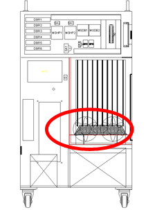
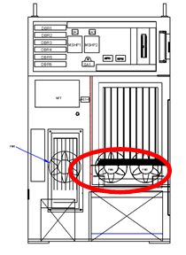

개요
로봇의 감속 또는 중력방향으로 하강 시 발생한 회생전력을 저항을 통하여 방전하는데 이 저항의 과열에 관련한 에러입니다. 냉각용 팬의 성능저하, 과열 검지센서 회로의 고장, 저항의 단선, 일시적인 급격한 동작 및 지속적인 로봇 동작에 의한 회생방전 용량의 초과로 발생할 수 있습니다.
원인 및 점검방법
|
<모터 오프 상태에서도 항상 발생하는 경우> (1) 과열 에러 검지 관련 부품을 점검하여 주십시오. n CNTR 케이블의 저항을 점검하여 주십시오. n CNSG 케이블을 교체한 후 점검하여 주십시오. n 서보 구동장치를 교체한 후 점검하여 주십시오. n BD461/BD430 보드를 교체한 후 점검하여 주십시오.
<모터 On 하는 순간에 항상 발생하는 경우> (2) 전원 관련 부품을 점검하여 주십시오. n 회생저항 연결 케이블의 저항 값을 점검하여 주십시오. n 서보 구동장치를 교체한 후 점검하여 주십시오. n 제어기 내부 3상 전압을 점검하여 주십시오. n 제어기 입력 3상 전압을 점검하여 주십시오.
<로봇의 재생 속도에 따라 특정 스텝에서 발생하는 경우> (3) 로봇의 재생 속도를 변경하여 에러를 확인하여 주십시오, n 로봇의 재생 속도를 낮추어 에러를 확인하여 주십시오. n 회생방전 저항 값을 점검하여 주십시오.
<로봇의 기동 이후 5분 이상 경과한 상태에서 발생하는 경우> (4) 제어기의 냉각시스템 및 회생 전력량을 점검하여 주십시오. n 각 팬의 동작 상태를 점검하여 주십시오. n 팬의 전원 전압을 점검하여 주십시오. n 로봇의 재생 속도를 낮추어 에러를 확인하여 주십시오. |
그림 5.4 Hi4a-0000 제어기의 회생저항 과열 에러 관련 부품 배치
그림 5.5 Hi4a-0010/0012 제어기의 회생저항 과열 에러 관련 부품 배치
n CNTR 케이블 점검
과열 검지센서를 연결하는 CNTR 케넥터에서 센서의 이상 유무를 점검하여 주십시오. 센서는 정상 상태에서는 0.1옴 미만으로 측정되어야 합니다.
점검은 반드시 제어기 전원을 off한 후 실행하여 주십시오.
중형 로봇용 서보 구동장치 : HSXY6
소형 로봇용 서보 구동장치 : HDAD6
그림 5.6 Hi4a-0000 제어기의 CNTR에서 저항 값 측정
그림 5.7 Hi4a-0012/0012 제어기의 CNTR에서 저항 값 측정
n CNSG 케이블 교체 점검
CNSG 케이블을 정상품과 교체하여 에러가 발생하지 않으면 케이블의 접속 불량입니다. CNSG 케이블을 정상품으로 교체하여 사용하시기 바랍니다.
n 서보 구동장치의 교체 점검
회생방전 저항 과열 에러를 검지하는 부품은 중형용은 HSXY6이고, 소형용은 HDAD6입니다. 현재 사용 중인 제어기의 구성품을 확인하신 후 점검하시기 바랍니다. 정상품과 교체하여 에러 재발 여부를 확인하여 주십시오.
중형 로봇용 서보 구동장치 : HSXY6
소형 로봇용 서보 구동장치 : HDAD6
n BD461/BD430 교체 점검
BD461/BD430을 정상품과 교체하여 에러가 발생하지 않으면 해당 보드의 불량입니다. BD461/BD430을 정상품으로 교체하여 사용하시기 바랍니다.
그림 5.8 Hi4a-0000 제어기의 BD461/BD430의 교체
그림 5.9 Hi4a-0010/0012 제어기의 BD461/BD430의 교체
(2) 전원 관련 부품을 점검하여 주십시오.
과열 에러는 저항의 단선이나 방전제어의 이상의 경우에도 발생합니다. 또한, 회생방전 저항값과 3상 전원 전압의 증가로 인하여 발생할 수도 있습니다.
n 회생방전 저항의 단선 점검
회생방전 저항 연결용 케이블의 끝 단에서 측정한 저항 값이 수 M옴으로 확인되면 저항의 단선 또는 내부 배선 접촉 불량입니다. 회생방전 저항을 정상품과 교체하시거나 배선을 수정하여 주십시오. 점검은 반드시 제어기 전원을 오프한 후 실행하여 주십시오.
중형용(HSXY6) 회생방전 저항 값 : 7.5옴(CNKPPN 커넥터의 K, P간)
Hi4a-0010 회생방전 저항 값 : 25옴(CNRR 커넥터의 K, P간)
Hi4a-0012 회생방전 저항 값 : 15옴(CNRR 커넥터의 K, P간)
그림 5.10 Hi4a-0000 제어기의 CNKPPN에서 저항 값 측정
그림 5.11 Hi4a-0010/0012 제어기의 CNKPPN에서 저항 값 측정
n 서보 구동장치의 교체 점검
회생방전 저항 과열 에러를 검지하는 모듈인 중형용 HSXY6와 소형용 HDAD6를 교체하여 에러의 재발 여부를 확인하여 주십시오. 모듈 내부의 회로 고장으로 인하여 에러가 지속적으로 발생할 수 있습니다.
중형 로봇용 서보 구동장치 : HSXY6
소형 로봇용 서보 구동장치 : HDAD6
n 제어기 내부 3상 전압 점검
회생방전 동작은 약 DC 375V에서 시작합니다. AC 242V이상의 전압이 서보 구동 장치에 입력되는 경우에는 모터 On하는 순간에 회생방전 저항 과열 에러가 발생할 수 있습니다. 입력전압이 허용 범위를 초과하는 경우에는 제어기 입력 전압 점검절차와 제어기 내부 3상 전압 점검 절차에 따라 점검하시기 바랍니다.
Ø 서보 구동장치 입력 전압 사양 : 3상 AC 220V
Ø 모터 On 시 허용 범위 : 3상 AC 198V ~ 242V
(3) 로봇의 재생 속도를 변경하여 에러를 확인하여 주십시오.
로봇의 감속이나 중력방향으로 하강 시에는 서보 구동장치의 직류 전압이 상승하게 되고, 전압 상승에 의한 부품의 손상을 방지하기 위해서 회생방전 저항을 통해서 전력을 소모합니다. 로봇의 동작이 급격한 감속을 하거나 중력방향으로 빠른 속도로 이동하는 경우 에러의 원인이 됩니다. 로봇의 재생 속도에 따른 에러의 발생 여부를 확인하여 주십시오.
n 로봇 재생 속도의 변경
로봇 동작에 의한 회생 전력이 제어기의 설계 사양을 초과하는 경우 회생저항 과열 에러가 발생할 수 있습니다. 에러가 발생하는 스텝의 속도를 낮추어 동작시킨 후 에러의 발생 여부를 확인하여 주시기 바랍니다.
n 회생방전 저항 값의 점검
회생저항 연결 케이블의 끝 단에서 측정된 저항값이 매뉴얼에 표기된 값을 10% 이상 벗어나는 경우에는 저항의 불량입니다. 저항을 교체하여 주십시오. 점검은 반드시 제어기 전원을 Off한 후 실행하여 주십시오. 측정방법은 이전 페이지를 참고하십시오.
중형용(HSXY6) 회생방전 저항 값 : 7.5옴(CNKPPN 커넥터의 K, P간)
Hi4a-0010 회생방전 저항 값 : 25옴(CNRR 커넥터의 K, P간)
Hi4a-0012 회생방전 저항 값 : 15옴(CNRR 커넥터의 K, P간)
(4) 제어기의 냉각 조건 및 회생 전력량을 점검하여 주십시오.
로봇 기동 후 5분 이상 경과한 후에 회생저항 과열 에러가 발생하는 경우에는 제어기 냉각시스템의 이상이 발생하였거나 로봇의 재생 속도가 제어기 설계 사양을 초과하는 경우입니다. 제어기의 후면에는 서보 구동장치의 방열판과 회생방전 저항의 냉각을 위해 팬을 사용하고 있습니다.
표 5-1 제어기별 팬의 위치
|
Hi4a-0000 |
Hi4a-0010/0012 |
|
 |
 |
n 각 팬의 동작 상태 점검
회전하지 않거나 속도가 비정상적으로 낮은 경우에는 해당 팬을 교체하여 주시기 바랍니다. 팬의 수명은 동작 환경 및 시간에 따라 변동됩니다.
n 팬 전원 전압의 점검
모든 팬이 동작하지 않는 경우에는 팬의 입력 전압을 확인하여 주십시오. 팬의 입력 전압은 AC 220V로 설정되어 있으며, 허용 범위는 정격의 10% 이내입니다. 전압이 10% 이상 낮을 경우에는 팬의 낮은 회전 속도로 인하여 냉각 효과가 저하됩니다. 전압이 낮은 경우에는 팬 전원과 제어기의 입력전압을 확인하여 주십시오.
n 로봇의 재생 속도에 따른 에러 발생을 확인하여 주십시오.
5분 이상 연속 재생 중 과열 에러가 발생하는 경우에는 제어기 냉각 능력을 초과하는 로봇의 동작이 반복되었기 때문입니다. 로봇의 재생 속도를 낮추어 에러의 발생 여부를 확인하시기 바랍니다. 속도를 낮추어서 회생저항 과열 에러는 발생하지 않지만 원하는 작업 속도를 달성하지 못하는 경우에는 당사에 문의하시기 바랍니다.